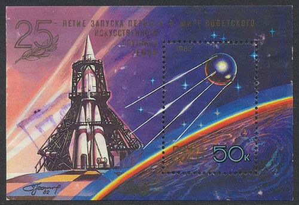
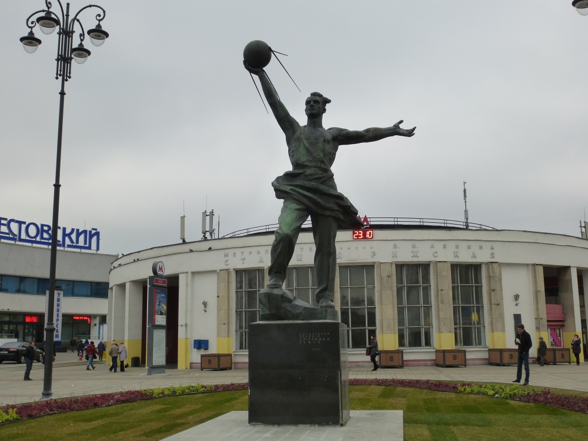
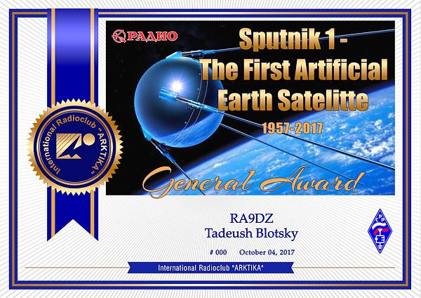
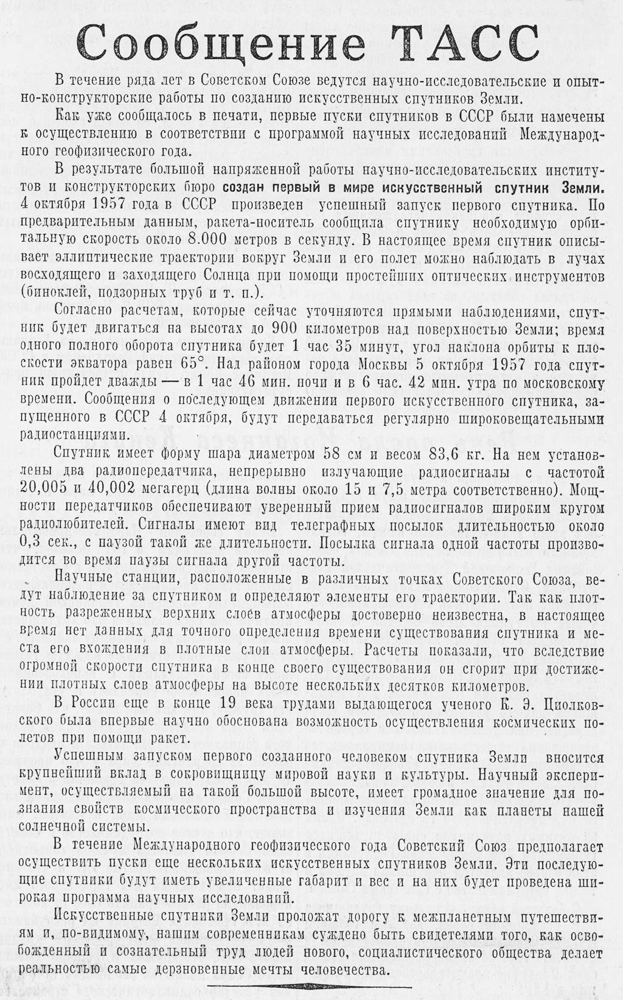

Галерея

Почтовый блок, посвящённый 25-летию запуска первого спутника

Макет первого спутника на испытательном полигоне

Памятник создателям первого в мире искусственного спутника Земли

Для получения диплома General Award «Sputnik 1 - The First Artificial Earth
Satellite» необходимо набрать 1440 очков (количество оборотов спутника
вокруг Земли).

Газета "Вечерняя Москва", 5 октября 1957 года